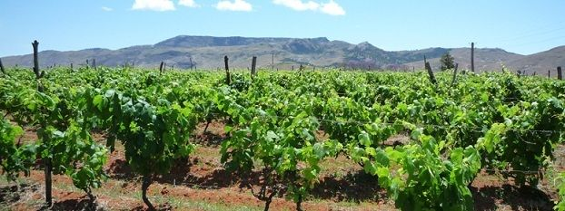

Le vignoble d'Antsahamasina
Historique
Antsahamasina, situé dans la région Haute Matsiatra, fait partie des zones historiques de la viticulture malgache. Les habitants y cultivent la vigne depuis la période coloniale, quand les missionnaires et colons ont introduit des cépages venus d'Europe.

Caractéristiques
C'est un terroir de moyenne altitude (plus de 1 200 m), favorable à la vigne grâce au climat tempéré des hauts plateaux betsileo. On y trouve surtout des petits producteurs familiaux, qui vendent leurs raisins ou produisent du vin artisanal.
